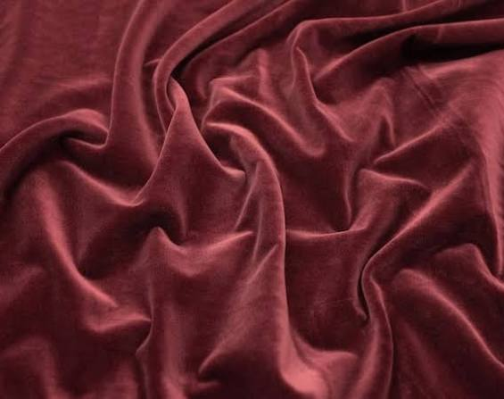
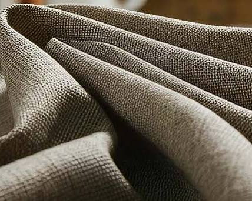
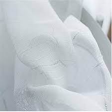
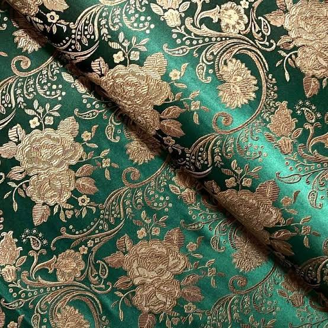
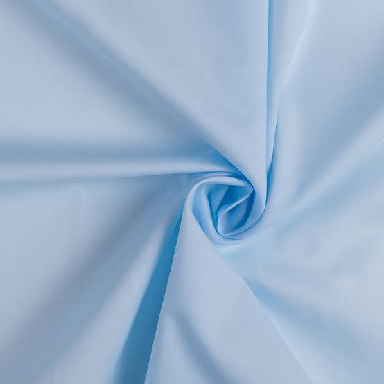

Discover our beautiful collection of premium fabrics

Premium Grade
Luxurious, high-shine material perfect for tailoring evening gowns and traditional tunics.

Artisan Choice
Deep-toned, ultra-soft textile heavily favored for winter ensembles and bridal borders.

Essential Eco
Lightweight and highly structural, providing maximum comfort for everyday summer outfits.

Ultra-Lightweight
Sheer, flowing textile embellished with subtle gold threads, commonly selected for dress scarfs and sheer overlays.

Heavy Woven Luxury
Richly patterned fabric featuring intricate gold and silver floral motifs woven directly into the weave for formal wedding attire.

Casual Comfort
High-thread-count combed cotton, exceptionally breathable, smooth, and ideal for daytime daily-wear tunics.